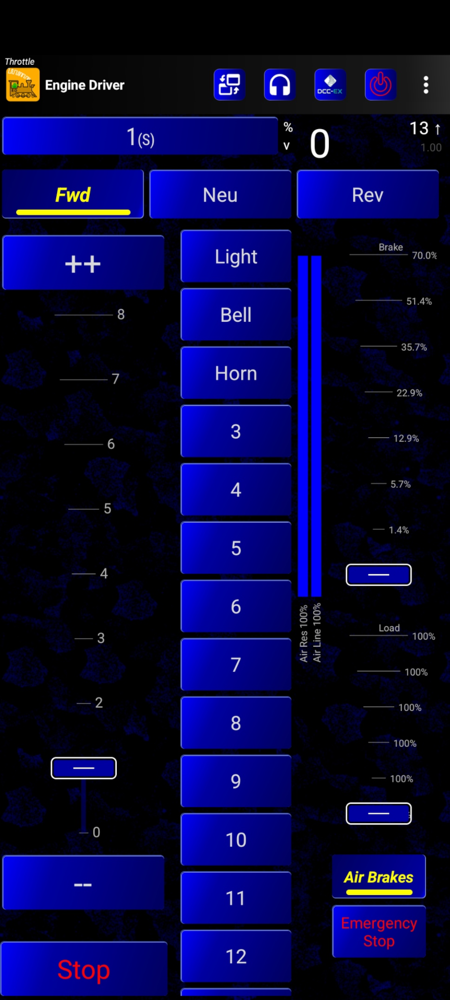

Semi-Realistic Throttle (SRT)
Overview
The Engine Driver Semi-Realistic Throttle (SRT) provides the operator with a set of controls to better simulate prototypical train behaviour.
It does so by adjusting the speed commands sent to the locomotive. To be clear, the SRT does not change any of the decoder CV settings. It has been designed to work with all brands of DCC and Sound decoders with or without programmed decoder momentum or brakes.
{kind=link}
Key SRT Controls/Displays
Load - an ability to set the load being put on the loco, from no load to very heavy trains
Speed Control - operator commanded speed
Direction - direction of movement
Brake Control - operator commanded brake amount
Functions - set/release given decoder functions
Air Reservoir Status - a display of the fill state of the air brake reservoir
Target and Commanded Speed Display - both the operator commanded speed and the current speed command sent to the loco are displayed
Air Brakes Button - enable or disable the ‘Air Brake’ feature
Stop Button - command the speed to go to zero, plus other optional actions
Emergency Stop Button - command the actual speed immediately to zero
Basic Operation
The SRT modifies the speed commands sent to the loco based on the SRT operator controls (Load, Speed, Brake). The SRT utilizes throttle speed control to simulate momentum, train loading, and brakes.
The SRT can be user configured to provide a base amount of SRT (in phone) created momentum that then moderates the operator commanded speed. Increasing the Load, effectively increases this SRT created momentum (slower acceleration and slower braking). Increasing the Brake, effectively increasing this SRT created momentum (slower braking).
Note that the SRT “momentum” works in combination with any momentum programmed into the decoder. That is the loco will respond to the SRT speed commands that it receives in its normal manner.
For example:
Normal throttle
Operator increases or decreases the speed control,
The new speed command is immediate sent to the loco,
If the loco’s decoder has no momentum set, the loco’s speed increases or decreases immediately to match the speed control,
If the loco’s decoder has momentum set, the loco’s physical speed gradually increases or decreases gradually based on the momentum setting in its decoder .
SRT throttle with decoder momentum
Operator increases or decreases the speed control,
The SRT moderates the speed commands sent to the loco based on the Load, Brake (and other) settings of the SRT with the result that the loco sees speed commands that increase and decrease gradually over time,
- Depending on the decoder momentum settings;
If the decoder momentum settings are more extreme than the SRT, the loco’s physical speed increases or decreases more even more slowly than in the Normal throttle case because the decoder momentum is being applied to the slower speed commands coming from the SRT.
If the decoder momentum setting are less than the SRT, the loco’s physical speed increases or decreases as pre the setting in the SRT,
SRT throttle with no, or little, decoder momentum
Operator increase or decreases the speed control,
The SRT moderates the speed commands sent to the loco based on the Load, Brake (and other) settings of the SRT with the result that the loco sees speed commands that increase and decrease gradually over time.
SRT - Detailed Operation
The primary difference between the SRT and a normal throttle is that the SRT simulates momentum inside the Engine Driver App, regardless of any momentum and brake settings inside the decoder.
Because the SRT simulates momentum, increasing and decreasing the on-screen throttle does not immediately send the equivalent DCC speed commands to decoder/loco. Instead, gradual speed changes are sent over a period of time depending on the a) the throttle setting, b) direction c) the Load setting, and d) the Brake Setting.
a) Throttle
The throttle can be set to show either a percentage slider or a slider with a distinct number of throttle steps/notches. The throttle can also optionally be set to show Increase (+ +) and decrease (- -) speed buttons in the preferences.
To increase or decrease speed you can either i) drag the throttle slider up and down, or ii) press the increase or decrease buttons.
As stated above, this does not instantly send those speed commands to the decoder/loco. The speed changes are gradually sent to the loco over a period of time.
If the speed is set to zero from a previous higher speed the loco will be commanded to gradually go to speed zero. (Coast to zero.)
If the Direction is set to ‘Neutral’, then the throttle position is ignored, and the loco will be commanded to gradually go to speed zero. (Coast to zero.)
If the Brake is applied while the throttle is set to zero then the loco will be more rapidly commanded to go to speed zero.
If the Brake is applied, while the throttle is set (not zero), then the loco will be commanded to gradually go to a new speed which is determined by how much throttle is applied and how much brake is applied. Which may or may not be zero.
If the load is set, then all/and the gradual speed changes are slowed down.
b) Direction
While the Direction is set to ‘Forward’ or ‘Reverse’, throttle changes will result in the loco moving in that direction, subject to the setting of the Brake.
While the Direction is set to ‘Neutral’, the throttle changes are ignored, and the loco will be commanded to gradually go to speed zero. (Coast to zero.)
c) Load
‘Load’ is intended to simulate if the train you are controlling has none, a few, many, or a huge number of carriages behind it. Load can also be increased or decreased to simulate going up or down a slope.
The Load can be set to show either a percentage slider or a slider with a distinct number of steps/notches.
The maximum load can be set in the preferences. (the Default is 1000%) The Load slider is exponential in scale, so from notch 0 to 1 to 2 only small increases of load are applied, but by the final notches, huge changes are applied.
So, for an empty train (just the loco), a load setting of 100% (the bottom setting) is normal. For a train with a few loaded carriages you might set it at 200%. For a huge, fully loaded, coal train you might set it at 1000%.
Note: Load changes are only applied when you take your finger off the slider.
d) Brakes
Brakes can be used with or without the simulation of the Air Reservoir and Air Line.
‘Air Brake’ is enabled by default. It can be permanently disabled with the ‘Disable the Air Reservoir’ preference. Even with the ‘Air Brake’ enabled, you can enable or disable the Air Brake feature at will with the ‘Air Brake’ button.
Brakes - With the Air Reservoir and Air Line Enabled
The ‘Air Brake’ feature is designed to simulate a very rough approximation of the Westinghouse Air Brake system used by early US railroads.
In Summary:
The Air Brakes work by releasing air from the line. (This was part of the failsafe design in that if the line broke for any reason, all the brakes on all the carriages would engage.)
You can only release more air from the line or fully release the brake to allow the line to refill.
Therefore, Brakes can only be applied more than the current settings, or off. Never less than the current setting (unless to off).Air in the line is filled from the reservoir on the loco, on demand.
If the reservoir is full, the line will fill quickly.
If the reservoir is low, then the line will fill slowly.
While the line is filling, the brakes are still effectively partly applied. As a result you can not immediately turn the brakes off. They take time to turn off.
The Air Brakes slider can be set to show either a percentage slider or a slider with a distinct number of steps/notches.
The Maximum Brake can be set in the preferences. (The Default is 70%) The Brake slider is exponential in scale, so from notch 0 to 1 to 2 only small increases of brake are applied, but by the final notches, huge changes are applied.
Note: Setting the Maximum Brake in the preferences to 100% will result in the unrealistic speed drop to zero almost immediately, if the Brake is dragged to the top of the slider.
Note: Brake changes are only applied when you take your finger off the slider.
To apply the brakes simply drag or touch the slider. when you lift your finger the brake will be applied to the percentage indicated on the slider.
If the Brake is applied while the throttle is set to zero then the loco will change more rapidly (than without brake) commanded to go to speed zero.
If the Brake is also set, while the throttle is set (not zero), then the loco will be commanded to gradually go to a new speed which is determined by how much throttle is applied and how much brake is applied. Which may or may not be zero.
Brakes - Without the Air Reservoir and Air Line Enabled
In Summary: The amount of Air in the reservoir and line are ignored. The position of the slider is the amount of brake that will be applied
The Brakes can be applied and turned off at will. There is no restriction on their use.
Decoder Integration
The SRT has been designed to work with all decoders.
As explained above, the SRT created momentum effects can optionally layer on top of the decoder programmed momentum.
Braking - With Decoder Brake Functions
The SRT also includes a feature that allows the SRT Braking control to be integrated with decoder braking (and other) functions in a very flexible manner. If the Decoder Brake type is activated in the Decoder Brake Type preference setting (see below), then the SRT Brake control can be configured to trigger up to four decoder functions at each of three brake thresholds.
The three brake thresholds are referred to a Low, Mid and High.
The Low state is triggered whenever
the Brake Control > the defined Low threshold AND < the defined Mid threshold
The Mid state is triggered whenever
the Brake Control > the defined Mid threshold AND < the defined High threshold
The High state is triggered whenever
The Brake Control > the defined High threshold.
{kind=link}
For each of the three thresholds, up to five decoder functions can be activated. These can be any decoder functions including obviously any decoder brake functions.
This allows the user to set up
layered decoder brakes (brake 1 at the low threshold, brakes 1 and 2 at the mid threshold, etc).
to trigger other functions along with any brake function(s), e.g. bell
Note again that the SRT Brake will operate in concert with the specified decoder brake functions. Recall that all the SRT Brake function is doing is reducing the commanded speed to the decoder.
If the user wants to use only the decoder brake but still use the SRT brake control, the decoder brake functions could be activated at only the 100% SRT Brake setting (where the SRT sets the commanded speed to zero immediately).
If you only want to use one or two of the thresholds (not all three) simply set the threshold of the unwanted ones to -1, or the function to activate to -1 and it/they will be ignored.
Preference Settings for the SRT
Acceleration Speed Step Repeat Delay
How long between acceleration speed steps repeats (in milliseconds). Smaller is faster.
This setting (combined with the Speed Step Amount) is used to provide a basic level of SRT create momentum to loco movement.
Think of it providing a smoothing function to the speed control (given that the Load settings will be the primary means of determining major impacts on train performance)
The default settings provide a moderate momentum.
To effectively turn off this basic SRT momentum (and rely entirely on the decoder momentum),
set the delay time to 100,
step amount to 40.
Deceleration Speed Step Repeat Delay
How long between deceleration speed steps repeats (in milliseconds). Smaller is faster.
See notes above.
Speed Step Amount
How much the actual speed step jumps each step to the target speed. Larger is faster.
See notes above.
Maximum Throttle Percentage
Maximum allowed slider value in % in ALL throttle sliders.
Limits the maximum speed of the loco.
Throttle Notches
Adjust the Throttle as percentage, or by a specific number of steps/notches
Affects the display of the speed control of the throttle.
Number of Brake Steps
Adjust the number of sets in the Brake Slider
Affects the display of the Brake control.
Note that the percentage Brake applied at each step is annotated on the brake view
Note as clearly seen in the Percentage option, the amount of brake per step increases exponentially.
Maximum Brake Percentage
Adjust the maximum percentage of the Brake slider. (5-100%) 100%=immediate zero
Sets the maximum amount of braking applied.
Disable the Air Reservoir
If checked the fill state of the air reservoir and air will not impact available brakes
See notes above for usage with and without the Air enabled.
Rate the air brakes refresh
Adjust the rate that the Air Brakes will refresh/refill (in milliseconds). Smaller is faster.
Number of Load Steps
Adjust the number of steps in the Load Slider
Affects the display of the Load control.
Note that the Load applied at each step is annotated on the Load view
Note as clearly seen in the Percentage option, the amount of Load per step increases exponentially.
Maximum Load Percentage
Adjust maximum percentage of the Load Slider. (100-2000%) 100% = loco alone
Sets the maximum amount of Load applied.
Decoder Brake Type
Activate the Brake functions on the decoder
Allows the user to turn on the decoder activation features (see above) of the SRT Brake function.
Decoder Low Function Number(s)
Which Decoder Function(s) to activate at Low Brake Value. (-1 to ignore)
See description of the SRT integration with decoder braking above.
Decoder Low Brake Value (Percent)
What Percentage Brake to activate the Low Function(s)
See description of the SRT integration with decoder braking above.
Decoder Mid Function Number(s)
Which Decoder Function(s) to activate at Mid Brake Value. (-1 to ignore)
See description of the SRT integration with decoder braking above.
Decoder Mid Brake Value (Percent)
What Percentage Brake to activate the Mid Function(s)
See description of the SRT integration with decoder braking above.
Decoder High Function Number(s)
Which Decoder Function(s) to activate at High Brake Value. (-1 to ignore)
See description of the SRT integration with decoder braking above.
Decoder High Brake Value (Percent)
What Percentage Brake to activate the High Function(s)
See description of the SRT integration with decoder braking above.
Example Cases
by John Geddes
The following cases are provided as examples of how the SRT can be used. The hope is that they will provide guidance to other SRT users in how they might use the SRT.
The set up for these cases was:
DecoderPro
Sprog 3
Two separate EngineDriver apps running on two Fire7’s.
Bowser SD40-2F
LokSound V4 Select decoder.
Case 1: Using the SRT as a “normal” ED throttle (that is without STR momentum effects)
I used my default decoder settings - CV3/4 = 80; Delay starting on Drive Sound enabled.
SRT accel/decel Speed Step Repeats - left as default values - 300, 800
SRT Speed Step Amount = 40
These SRT settings result in the decoder momentum taking precedence and the movement and sound performance of the loco are identical to using a normal ED throttle.
Note that in this case the SRT Load and Brake functions will not provide any effect because the SRT momentum is neutralized by the large Speed Step amount.
Case 2: Using the SRT with baseline SRT momentum
Set up as per Case 1 except SRT Speed Step Amount = 2
The loco movement and sound are very similar to Case 1. The momentum is somewhat greater because of the compound effect of the SRT momentum and the decoder momentum. To my ear the sound performance is nearly identical to using the only decoder momentum.
When I use the SRT Brake in this case, I do not hear a noticeable difference in the sound relative to operating the loco using a standard throttle. This is no doubt because the decoder deceleration momentum is still relatively light (CV4=80).
Case 3: Using the SRT Load and Brake features
SRT Load: Max = 700%, 5 steps - Set Load = 316% (step 3)
SRT Brake: Max = 100%, 5 steps
No Decoder Brake functions used
Again with decoder momentum set to nominal values CV3/4=80, the loco sound behavior using the SRT vs the normal throttle is about the same.
Case 4: Loco set to high deceleration momentum and using SRT Load and Brake
Decoder CV3=80, CV4=255
SRT Load: Max = 700%, 5 steps - Set Load = 316% (step 3)
SRT Brake: Max = 100%, 5 steps
In this case on acceleration, using the SRT throttle and the Load creates a slow, smooth start as you would expect but without extra notching that you could achieve by using Drive Hold.
On deceleration, the loco does not go into coast mode (prime mover idling) as quickly as when using a normal throttle.
If the later behavior is a big concern in such a case, an easy work around is to take advantage of the feature that when the SRT Brake is at 100% it reduces the commanded speed almost immediately. You lose some of the additional momentum added by the SRT Load function but the loco will behave just as if being controlled by a normal throttle (i.e. the operator can use the decoder brake function to bring the loco to a stop). See also Case 5 when use of the Stop button is discussed.
On the positive side, the SRT Load function provides a very easy way to simulate even larger momentum effects than the maximum value CV4 can generate.
Case 5: As per Case 4 but the user wishes to revert to normal decoder momentum and sound during braking.
Parameters as above
Stop Button Action set to “Speed to Zero”
The acceleration of the train is as per Case 4. It takes full advantage of the additional momentum created by the SRT Load function.
On deceleration, the early portion of the deceleration can be controlled using the SRT Brake and this will simulate the behaviour of a very heavy train.
If the operator wishes to put the loco into a coasting-like sound, the operator can activate the Stop button which will immediately send a zero speed command to the decoder. This brings the loco sound into a coast mode (at least for LokSound decoders). The remaining deceleration can be controlled by the standard (brake) functions of the decoder or if they have been set up in the SRT Decoder Brake Type function, by use of the SRT Brake slider.
In this way, an operator can get the best of both worlds - a dynamic throttle controlled load and still get excellent advantage of the built-in sound features of the loco decoder.
General Note - Decoders
The SRT is not designed to precisely replicate decoder momentum and sound features. Rather it is designed to be decoder independent and to be flexible enough to complement a variety of non-sound and sound decoders in a variety of operating scenarios.
This discussion and testing has been done in relation to LokSound only because that is the decoder family that the author has access to and that the author is familiar with. The expectation is that the SRT will provide similar benefits and opportunities for users of other decoders.
LokSound users will recognize that the SRT Load and Brake features have an approximate similarity with the Drive Hold feature. Both can be used to simulate the behavior of loaded trains. There is no doubt that the Drive Hold feature gives the operator complete control of movement and sound. In a way, the SRT Load and Brake features can be considered as being a form of approximate “hands-free” equivalent.
It goes without saying that operators experienced with using Drive Hold can get better control of loco movement and sound.
Conclusion
Based on the above experiments, there is not a major negative impact of the SRT Load and Brake features on the sound performance of LokSound V4 decoders. This is not to say that there is no impact, but for most users I expect that it will be quite “livable”. For those operators willing to accept some sound compromise, the SRT provides a very easy mechanism to simulate heavy trains.
John Geddes